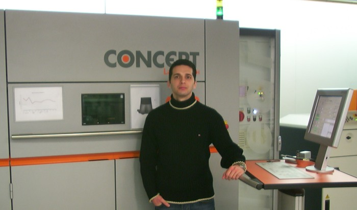
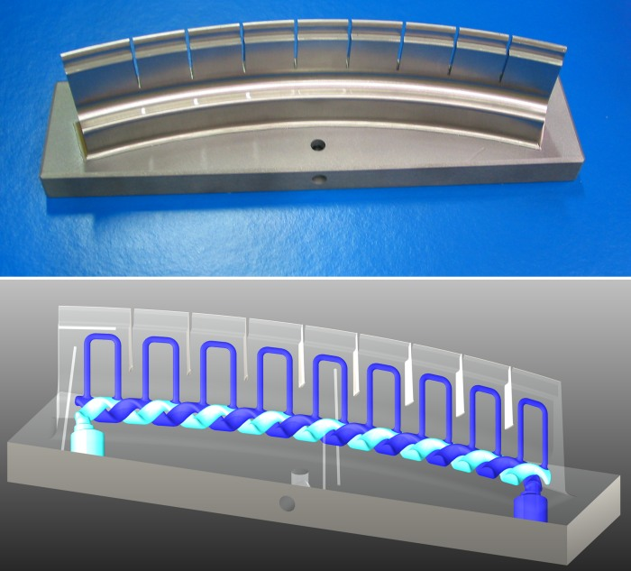

|
Not:
Orijinal olarak TurkCADCAM.net
Dergisi 2. Sayýsý için hazýrlanmýþ bu röportaj, ilk kez Aralýk 2006'da TurkCADCAM.net Portalý'ndan
yayýnlanmaya baþlamýþtýr.
Mehmet
Cenk Sinirlioðlu, Almanya'da geleceðin kalýp tasarým
ve imalat teknolojileri üzerinde çalýþan CONCEPT Laser GmbH
firmasýnda Malzeme ve Teknoloji Md. olarak görev yapan bir
Ar-Ge mühendisi; Kendisiyle, kalýp tasarým ve imalat prosesine
köklü deðiþklikler getiren bu yeni teknolojiler hakkýnda ilgi
çekici bir söyleþi yaptýk...
Cenk bey, kendinizden bahseder misiniz? Üniversite eðitiminiz
sonrasý Concept Laser GmbH'deki kariyeriniz nasýl baþladý?.
Otoinþa* tekniðini
kullanan karmaþýk yapýlý metal kalýp imalatý uygulamalarý
ile nasýl tanýþtýnýz?
Cenk
Sinirlioðlu 1997 yýlýnda Ýstanbul (Erkek) Lisesi'nden mezun
olup, Ýstanbul Teknik Üniversitesi Makine Fakültesi'ne girdim.
Açýk konuþmak gerekirse ilk iki sene fazla mesleki ders görmediðimizden,
ileride ne yapmak istediðime dair en ufak bir fikrim bile
yoktu. Birinci yýlýn sonunda babamýn çok yakýn arkadaþý olan
Coburg Üniversitesi Makine Fakültesi öðretim görevlisi Prof.
Henning Altmann bizi ziyarete gelmiþti. Hatta o sene okulda
yaptýðým stajý sýk sýk soruyordu. Ancak bendeki ilgisizliði
fark etmiþ olacak ki, babamla birlikte oturup, ikinci yýl
sonunda iyi bir staj yapmam gerektiðine karar vermiþler. Staj
konusunu Almanlar'ýn neden bu kadar önemsediðini þimdi çok
daha iyi anlayabiliyorum.
Prof.
Altmann ikinci senem bitmeden beni aradý ve staj yapabileceðim
çok ilginç ve yeni bir konu olduðundan bahsetti. Yanýnda bitirme
çalýþmasý yapan Frank Herzog isimli bir öðrencisinin çalýþmasýna
yardýmda bulunabileceðimden ve onun deneylerini yaptýðý firmada
staj yapabileceðimden bahsetti. Ýki ay Almanya'da staj yapma
fikri benim de çok ilgimi çekti. Böylece 1999 yazýnda otoinþa
teknolojilerinin hýzlý kalýp imalatý uygulamalarýyla ve daha
sonra Concept Laser firmasýný kuran Frank Herzog'la tanýþmýþ
oldum.
O
zamanlar henüz Concept Laser firmasý yoktu. Frank'la birlikte
Hofmann Modellbau (SLA, SLS, vakum kalýpçýlýðý, aluminyum
kalýpçýlýðý vs.) firmasýnda stajýma baþladým. Frank'la bana
ayrýlmýþ ve o zamanlar yeni olan bir adet EOS M250 makinesi
vardý. Biz bu makinede o zamanlar EOS firmasýnýn kullandýðý
tek alaþým olan Direct Metal alaþýmýyla parça üretmeye çalýþýyorduk.
O zamanlar EOS makinelerinde CO2 lazeri kullanýyordu. Amaç
alaþýmdaki bakýrýn eriyerek nikelle sinterlenmesiydi. Yani
yoðunluðu ve mekanik özellikleri çok düþük parçalar üretilebiliyordu.
Zaten ancak küçük ve karmaþýk olmayan parçalarýn üretimi mümkündü.
Bu çalýþmalar çok hoþuma gitmiþti. Sabahtan akþama kadar bitmez
bir enerjiyle parça üretimi yapabilmeye çalýþýyorduk. Ama
o zamanki teknik çok yetersiz olduðundan daha çok makinede
nelerin düzeltilmesi ve geliþtirilmesi gerektiðini konuþuyorduk.
O yaz sadece bu makinede deðil, modelleme þirketinin kullandýðý
3D Systems SLA makineleri, EOS plastik SLS makineleri, vakum
silikon döküm vs. hakkýnda da çok þey öðrendim. Ayrýca Hofmann'ýn
ana þirketi olan plastik enjeksiyon kalýpçýlýðý yapan Hofmann
Werkzeugbau firmasýnda da bir süre staj yaptým. Bu staj sonunda
artýk biliyordum: Ýleride imalat sektöründe çalýþacaktým.

Pekiyi, Üniv. eðitiminiz sonrasý Concept Laser GmbH'deki
kariyeriniz nasýl baþladý?..
Hofmann
Innovation Group'da staj yaptýktan sonra, metal lazer sinterleme
konusunda çýkan bütün makaleleri ve piyasadaki þirketlerin
durumunu da takip etmeyi ihmal etmedim. Hatta Ýstanbul'daki
bitirme çalýþmamý da hocam Doç. Dr. Haydar Livatyalý'nýn yanýnda,
sektördeki makinelerin karþýlaþtýrýlmasý ve örnek bir kalýp
parçasýnýn dizayný konusunda yaptým.
2001
yýlýnda makine masteri yapmak üzere Hanover üniversitesine
gittim. Burada "imalat teknolojileri" ve "product-engineering
and logistics" bölümlerinin ikisini birlikte bitirdim.
Burada öðrenimim boyunca bir buçuk yýla yakýn bir süre malzeme
kürsüsünde "Teknik seramik malzemelerin metalle lehimlenerek,
otomobillerde ve dövme kalýplarýnda kullanýlmasýnýn araþtýrma
ve geliþtirme faaliyetleri" konusunda araþtýrma asistaný
olarak çalýþtým. Daha sonra sekiz ay Hannover Lazer Merkezi'nde
(Laser Zentrum Hannover - LZH) geliþtirdikleri "mikro
lazer sinterleme makinesinin kurulmasý ve çalýþýr duruma getirilip,
optimize edilmesi" ile bir Avrupa Birliði projesinde
geliþtirilen "LENS yöntemiyle mikro parçalar üreten bir
makinenin deneylerinin yürütülmesi"ni saðladým. Ayrýca
burada "Saf titanyum ve bir demir-bakýr alaþýmýnýn mikro
laser sinterleme yöntemiyle üretimindeki parametrelerin araþtýrma-geliþtirmesi"
konusunda bitirme tezimi hazýrladým. Eðitimim sonunda doktora
yapýp yapmama konusunda kararsýzdým. Baþlasam 5-6 sene bölümde
kalmam gerekebilirdi. Bense bu konu hakkýnda bir þirkette
çalýþýrken doktora yapmak ve böylelikle endüstrinin daha içinde
olmak istiyordum. Ancak LZH'den Prof. Haferkamp doktorada
mutlaka bölümde calýþmam gerektiðini söyleyince, Frank'ýn
daha önceden yaptýðý teklifini kabul edip Concept Laser'de
"malzeme ve teknoloji sefi" (head of materials and
technology) olarak iþe baþladým. Ekim 2004'ten beri Concept
Laser'de malzeme ve teknoloji geliþtirilmesini yürütmekteyim.

Concept
Laser GmbH ve LaserCUSING hakkýnda bilgi verir misiniz?
Frank'la
olan kontaðýmýz 1999'dan beri devam etmekteydi. Almanya'ya
gelir gelmez okul baþladýktan sonra Euromold 2001 fuarýna
gittiðimde ben de herkes gibi bir süprizle karþýlaþmýþtým.
Hofmann Group içinde Concept Laser firmasý kurulmuþ ve M3
makinesi Euromold'la birlikte pazara sunulmuþtu. Makinede
daha öncekiler gibi sinterleme yöntemi yerine ilk kez standart
çelik malzemesi tam olarak eritilerek parça üretiliyordu.
Bu yönteme "Concept" ve "Fusing" (=tam
olarak eritme) kelimelerinin birleþmesinden gelen LaserCUSING®
adý verilmiþti. Frank bana fuarda yeni makine yapma fikrini
þöyle anlatmýþtý: "Ödevim bitmiþti ve rapid tooling yöntemiyle
hala kalýplarda kullanýlabilecek kalitede parçalar üretemiyorduk.
Piyasadaki makinelerin birçoðunda çeþitli geliþtirmeler yapýlmasý
gerekliydi. Hofmann firmasýnýn sahibi olan Günther ve Robert
Hofmann'la birlikte yeni bir makine geliþtirmeye karar verdik.
Ana hedefimiz yüksek yoðunlukta ve orjinal malzeme özelliklerine
sahip parçalar üretebilmekti...". Ve bunu baþarmýþlardý.
40 yýlýn üzerindeki kalýpçýlýk tecrübesi ve yeni Nd:YAG lazerlerle
2 yýllýk çalýþmalarý sonunda 1.4404 çeliðinden her türlü karmaþýk
formdaki parça kolaylýkla hýzlý bir þekilde üretilebiliyordu.
Bu sistem Euromold 2001 fuarýnda Concept Laser'e ikincilik
ödülü getirdi.
Asýl
patlama tabii kalýpçýlýk sektöründe önemli bir yeri olan Hofmann
kalýpçýlýk firmasýnýn bu makineyle kalýp çeliðinden yaptýðý
parçalarla oldu. Bu yöntemde talaþ kaldýrma yöntemleriyle
mümkün olmayan karmaþýk soðutma kanallarýnýn sayesinde, plastik
parçalarýn üretim süresi büyük oranda kýsaltýlabiliyordu.
Bu soðutma kanallarý yüzeyin 1mm'den yakýnýna kadar konulabilip
ve plastik parçanýn soðuma süresini yüzde 60(!)'lara varan
oranlarda azaltabilmektedir. Ayrica parçalarýn geri yaylanma
problemi de büyük ölçüde ortadan kalkmaktadýr. Bu da kalýpçýlara
ve plastik parça üreticilerine yüksek kalite ve fiyat avantajlarý
saðlamaktadýr.
Þu
an talaþlý imalat yöntemlerine göre belirgin bir dezavantajýmýz
yok, çünkü onlardan farklý bir yöntem ve daha önce yapýlamayanlarý
baþarabiliyor.
Soðutma
kanallarý plastik enjeksiyon kalýpçýlýðýnda olduðu gibi aluminyum
gibi hafif metallerin dökümünde de kullanýlmaktadýr. Ayrýca
LaserCUSING® yöntemiyle CrCo diþ protezi, titanyum ve aluminyum
gibi malzemelerin üretimi de mümkündür.
LaserCUSING
teknolojisi nasýl çalýþýr? CNC frezede veya elektroerozyon
tezgahta iþlemeye göre en büyük farký ve avantajlarý nedir?
LaserCUSING
teknolojisi kisaca SLS yonteminde de oldugu gibi metal tozunun
kat kat yuzeye serilip, her katin lazer ile tam olarak eritilmesidir.
CNC frezeye gore insan gucu olmadan calistigindan daha hizli
uretim yapabilir. Ayrica diger yontemlerle mumkun olmayan
parca icindeki karmasik sogutma kanallari da ancak bu yontemle
mumkundur. Lazer oyma da ileride elektroerozyona gore avantaj
saglayacak bir yontem ve arastirmalari surmekte.
Kullanýlan
metal tozlarýnýn çapý ne civarda? Sinterlemede kullanýlan
lazer gücü ne kadar? Ýnþa sýrasýndaki katman kalýnlýklarý
ne kadar oluyor?
Kullanilan
metal tozlarinin capina ait bilgi veremeyecegim, cunku malzeme
ozellikleri onemli bir konu. LaserCUSING`de kullanilan laser
Rofin firmasinin 100W gucundeki puls mode ile de kullanilabilen
Nd:YAG lazeri.. Biz tecrubelerimizden, parcalarin kalitesi
ve yogunlugunu en ust duzeyde tutmak icin 30 µm lik katlar
tercih ediyoruz.
En
fazla ne boyutta bir kalýp üretilebiliyor? Hassasiyeti nedir?
Su
an M3 makinemizin alani 250x250 mm ve bu boyutun tamamini
rahatca kullanabiliyoruz. Ayrica musterilerimiz icin bir yenilik
olarak ayni modulu 300x350 mm kullanabilecek sekilde buyuttuk.
Parca hassasiyetleri buyuk parcalarda en fazla +/-100µm kucuk
parcalarda +/-50µm oluyor. Ancak kaliplarda kullanilan parcalari
yuzeyinde biraz malzeme birakip kisa bir freze islemine tabi
tutuyoruz. Boylelikle parcalar direk kalipta kullanilabiliyor.
Bu dusundugunuz gibi uzun da surmuyor. Belki tamami frezelense
de ayni surede olacak, ama icinde sogutma kanallari da var
gibi dusunun. Altini frezelemissek bunu Erowa veya baska bir
sistemle cok hassas bir sekilde Cusing modulune yerlestirip,
frezelenmis parcanin uzerine parca yapabiliyorsunuz.
Üretim
hýzý ne kadar? Örneklerle açýklar mýsýnýz? Mesela 100x100mm
taban ölçülerinde ve 50mm yüksekliðinde, soðutma kanallý bir
kalýp ne kadar zamanda inþa edilebiliyor?
Malzemeden
malzemeye uretim hizi degisiyor. Ayrica bu parcanin sekline
de bagli. Genel olarak kalip celigimizin uretim hizi yaklasik
3 cm³/h civarinda. Tabi kaliplarin sogutma kanalina kadar
olan kismini frezeleyip gerisini bu yontemle yapip (bunu da
patentle koruduk) daha hizli uretebilmek de mumkun. Bu boyut
olarak buyukce bir parca olur, tamamini alirsak 500cm³, ama
bunun tahminen yarisi kadari hacimdir. Biz tamami hacim desek
ve yaklasik bir hesap yapsak bile 170 saat civarina gelir.
Parca tam 7 gunde biter ve bu sure icinde makinenin basinda
durmaniz gerekmez. makineyi baslatir bir hafta sonra gelir
alirsiniz, haftasonu, tatil gunu farketmez. Ayrica paslamaz
celigimiz (yaklasik 4 cm³/h) ve hizli celik(>5cm³/h) adini
verdigimiz alsimlarimizin hizi bunun da ustunde.
Ýnþa
sonrasýnda içeride kalan sinterlenmemiþ metal tozlarý nasýl
dýþarý çýkartýlabiliyor? Zor olmuyor mu?
Bazý
kalýplarda zorluk çekiyorduk, ama bunlar için de yöntemler
geliþtirdik. Artýk pek problem yaþamýyoruz.
|